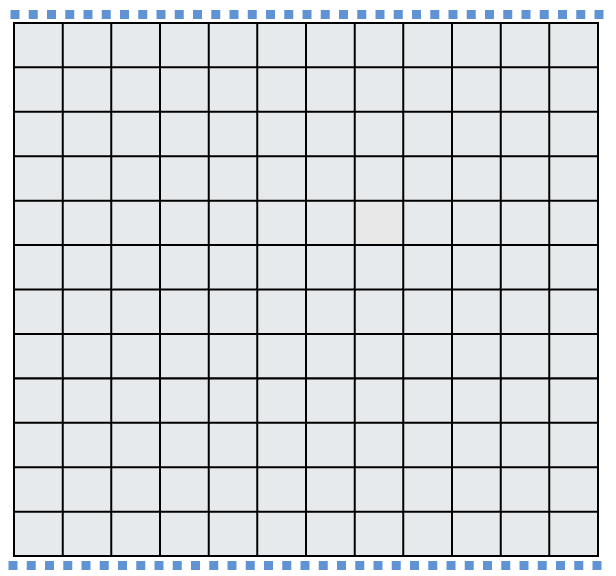

Study design
Practice problems
Please work on the practice problems in your group. At least one of the following problems will be assigned to the weekly problem set. Unless otherwise stated, problems come from the IMS textbook.
Time to implement the sampling methods we learned! Keep track of your work on this problem; we will return to it in the next few classes.
We have a farmer who grows sunflowers for making sunflower oil. Her field is arranged in a grid pattern, with 12 rows and 12 columns as shown below. Water is important for crops, so irrigation ditches have been installed along the top and bottom of the field. It is expected that plants closer to a water source will perform better than those further away from water.
The farmer would like to estimate the number of healthy plants in the field, along with a few other characteristics about the sunflowers. It would be unfeasible to conduct a census, so we should choose to sample a subset of the grid cells. Suppose we’d like to sample \(n = 12\) grid cells total.
Using words (sentences or bulleted list are fine) and perhaps labeling the figure below, describe exactly how you would obtain a sample of 12 grid cells using simple random sampling. I should be able to read your work and know what to do without any questions! Think about how you will perform the random sampling.
Then implement the method that you’ve written down, and either using the figure below or drawing your own 12x12 field, shade in the squares that correspond to your sample.

Using words (sentences or bulleted list are fine) and perhaps labeling the figure below, describe exactly how you would obtain a sample of 12 grid cells using stratified sampling where the strata are rows. I should be able to read your work and know what to do without any questions!
Then implement the method that you’ve written down, and either using the figure below or drawing your own 12x12 field, shade in the squares that correspond to your sample.
Using words (sentences or bulleted list are fine) and perhaps labeling the figure below, describe exactly how you would obtain a sample of 12 grid cells using stratified sampling where the strata are columns. I should be able to read your work and know what to do without any questions!
Then implement the method that you’ve written down, and either using the figure below or drawing your own 12x12 field, shade in the squares that correspond to your sample.
Using words (sentences or bulleted list are fine) and perhaps labeling the figure below, describe exactly how you would obtain a sample of 12 grid cells using cluster sampling where we have 24 clusters total. I should be able to read your work and know what to do without any questions!
Then implement the method that you’ve written down, and either using the figure below or drawing your own 12x12 field, shade in the squares that correspond to your sample.
Using words (sentences or bulleted list are fine) and perhaps labeling the figure below, describe exactly how you would obtain a sample of 12 grid cells using multistage sampling. I should be able to read your work and know what to do without any questions!
Then implement the method that you’ve written down, and either using the figure below or drawing your own 12x12 field, shade in the squares that correspond to your sample.
We discussed several methods of sampling today. Now consider a new sampling scheme that is commonly used in the social sciences when sampling from a “hidden” population. A scenario might be that we want to conduct a poll among homeless people, but the research team may only have contact details for a few homeless people.
Denote the initial contacts as Group 1. The sampling proceeds in the following stages:
- Stage 1: ask the people in Group 1 to take the survey, and then provide contact details for other people from the population who might want to participate. Denote these new contacts as Group 2.
- Stage 2: ask the people in Group 2 to take the survey, and then provide contact details for other people from the population who might want to participate. Denote these new contacts as Group 3.
- Proceed in a similar manner until the researchers have sufficient data.
- What are some advantages to this method of sampling?
- What are some disadvantages? Think about statistically and also ethically.
(2.5.20) To assess the effectiveness of taking large doses of vitamin C in reducing the duration of the common cold, researchers recruited 400 healthy volunteers from staff and students at a university. A quarter of the patients were assigned a placebo, and the rest were evenly divided between 1g Vitamin C, 3g Vitamin C, or 3g Vitamin C plus additives to be taken at onset of a cold for the following two days. All tablets had identical appearance and packaging. The nurses who handed the prescribed pills to the patients knew which patient received which treatment, but the researchers assessing the patients when they were sick did not. No statistically discernible differences were observed in any measure of cold duration or severity between the four groups, and the placebo group had the shortest duration of symptoms.
- Was this an experiment or an observational study? Why?
- What are the explanatory and response variables in this study?
- Were the patients blinded to their treatment?
- Was this study double-blind?
- Participants are ultimately able to choose whether to use the pills prescribed to them. We might expect that not all of them will adhere and take their pills. Does this introduce a confounding variable to the study? Explain your reasoning.